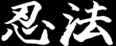
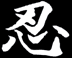
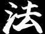

What is the difference between 'Ninpo' and 'Ninjutsu'?
Even though the term 'Ninpo' has been in use since World War II, very few people know its true significance and those who practice Ninpo Bugei are even fewer. Most people only recognise the art of the Ninja throught the term 'Ninjutsu'. Ninjutsu is best described as the collection of skills used by the Ninja, while Ninpo, often referred to as "the higher order of Ninjutsu", implies a philosophy for living, based on the principles of Nin.
The Japanese character for 'Nin' used in the words 'Ninja', 'Ninjutsu' and 'Ninpo', consists of 2 radicals or parts. The upper radical called 'Yaiba' means the cutting edge of a blade. The lower radical is read as 'Kokoro' or 'Shin' meaning heart. 'Nin' is also used to write 'Nintai' which means perseverance or patience, implying the important thing for a Ninja is to be patient under impossible circumstances and persevere when he cannot find a way to succeed on a mission. This form of thinking, the spirit of perseverance, is called 'Ninja Seishin'.
The names of many martial arts include the character 'Do' which means 'way'; however, when referring to Ninpo, 'Do' is not used. Instead 'Ho' (read as 'Po', in some combinations) is used. 'Ho' is frequently found in the names of religions. For example, 'Buppo', translated as 'Law of Buddha', has the literal meaning 'eternal truth'. Ninpo uses 'Ho' because this martial art has deep religious implications, it is not enough just to know techniques, it is where your heart and spirit are as a person that is important. Ninpo succeeds in combining two parts; martial arts (Bumon) and Religion (Shumon). This refinement of one's spirit is known in Japanese as 'Seishinteki kyoyo'. As an analogy consider Bumon as a right hand and Shumon as a left hand; possessing both of them provides a balanced body, (defending against a life-threat is dealt with by the spirit as much as with physical technique). This is comparable to the blending of the masculine force 'Yo' (yang) and the feminine force 'In' (yin) for a balanced universe, in Chinese philosophy.
The terms 'Jutsu', 'Do' and 'Ho' have different meanings, best understood by imagining a mountain. In this context jutsu would explain how to climb the mountain; a technique. 'Do' would teach the range of available routes leading to the mountain's summit; some difficult and some pleasurable. 'Do' is not exclusive to martial arts, but also applies to such activities as dancing, music and painting. The martial arts which use the term 'Do' i.e. Kendo, Aikido and Karatedo have reaching the summit of the mountain as their purpose. It is rare to find those who have succeeded in reaching that goal, and once they have arrived, where else can they go? 'Ho' is the cloud floating in the sky above the same mountain. Ninpo practitioners ride on this cloud, enjoy pleasurable times with nature and live on forever.
The character for 'Ho' is comprised of two 'radicals', 'Sanzui' which means water, and 'Saru' which means going forth. Combined results literally in 'water going forth', but at a deeper level implies the water cycle. From the clouds above, rain falls on the mountain and travels down into the valley becoming a stream. This stream adds to other streams, becoming a river, eventually flowing to the sea. There, the water rises towards heaven and becomes a cloud once more. This is the eternal law of the water cycle, which is meant by 'Ho'.
Thinking that mastery of technique is enough establishes disappointing limitations. If you are only looking for the way ('Michi/Do') you will become lost or come to a dead end. Beyond technique there is true mental and spiritual development. With Ninpo lies the eternal truth ('Ho/Po'). Genbukan students learn Ninpo not Ninjutsu. Ninpo is the greatest self-defence of the mind, body and heart. Through this martial art the ninja hears what is silent, sees what is invisible and endures what is excruciating. The true mission of a ninja is to deliver light to a dark world through perseverance, making life a sacrifice for the peace of humanity. Those who study Ninpo must pledge to have a heart as soft as a flower when dealing with people.
The enlightened warrior (Shinobi) will not be content with just a way (Do). His goal is to understand the eternal truth, to live within natural laws, and to fully develop martial techniques. This ancient martial art, like the rain of the water cycle remains constantly fresh and in motion.